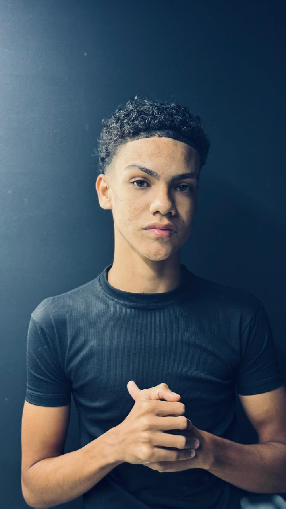
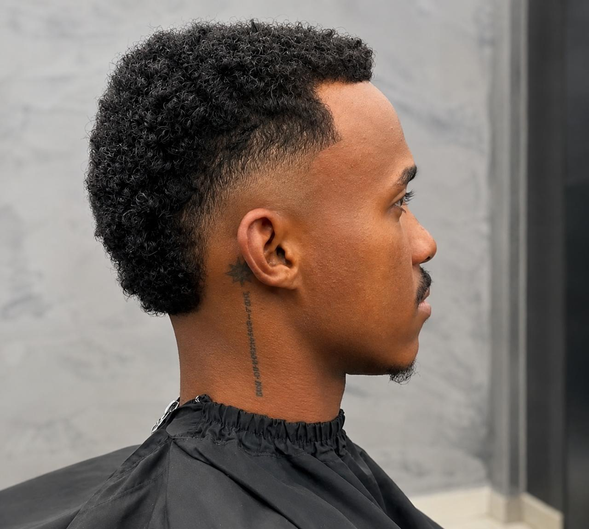
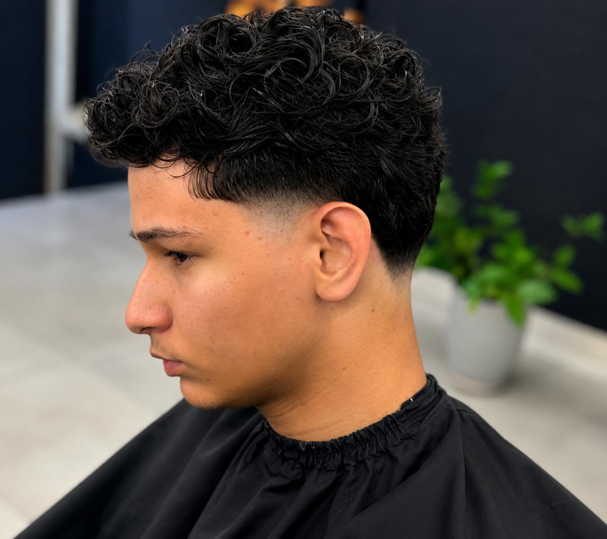
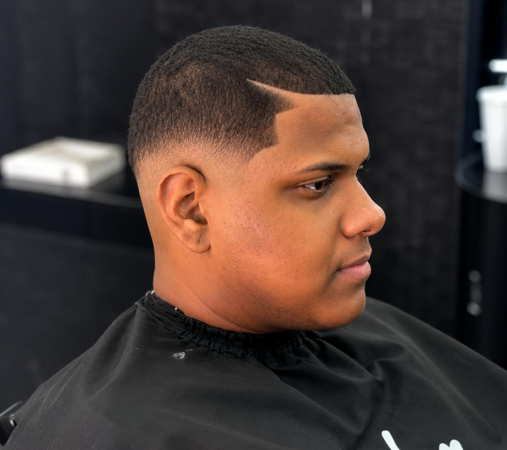
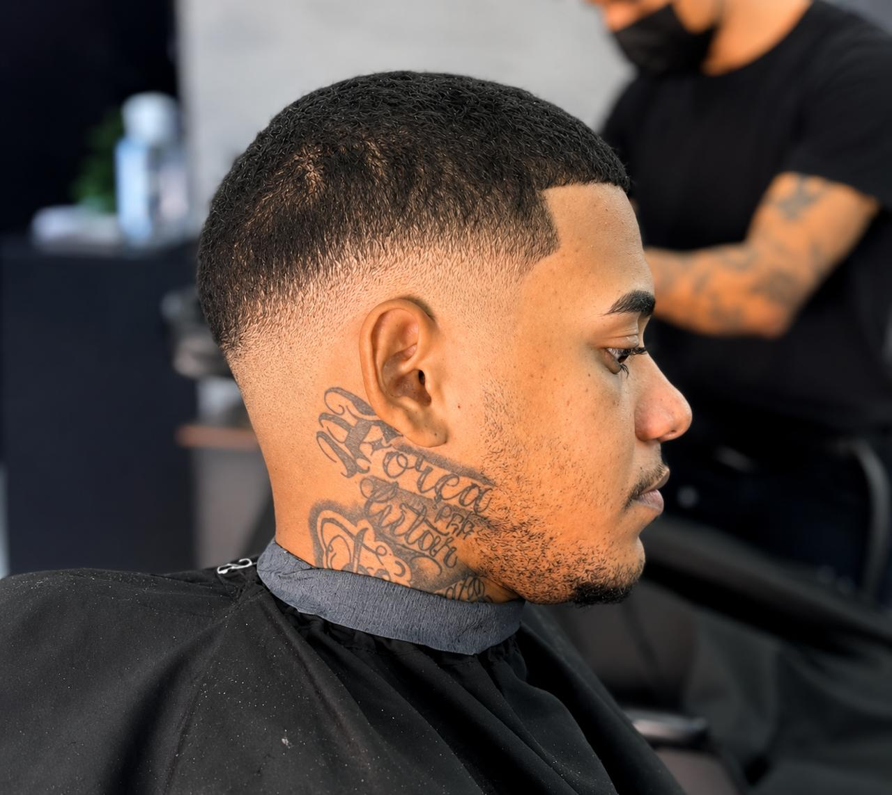

Conheça mais sobre a trajetória, especialidades e trabalhos de João Moreira.
Aqui vamos contar a trajetória profissional de João Moreira, como começou na barbearia, sua evolução profissional e as experiências que contribuíram para construir seu estilo de trabalho.
Biografia João Moreira:
João Lucas Cardoso Moreira Santos, 16 anos, iniciou sua trajetória para se tornar um barbeiro aos 14 anos, quando descobriu seu interesse pela profissão de barbeiro. Concluiu o curso de Barbeiro no Instituto Embelleze, com duração de quatro meses, e aos 15 anos começou a atuar profissionalmente na Kauathebarber. Desde então, dedica-se ao aprimoramento constante de suas técnicas, mantendo foco na evolução profissional, no aprendizado contínuo e no propósito de construir uma carreira sólida na área da barbearia.
Cursos, especializações e experiências profissionais de João Moreira.
Instituto Embelleze - 2025
Instituição Overcoming - 2026
Uma seleção de cortes e trabalhos realizados pelo próprio João.




Entre em contato com João ou agende seu horário na Kauã The Barber.